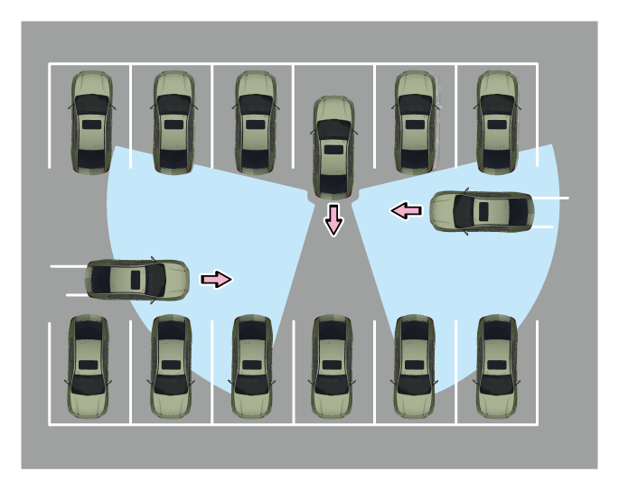

后方车辆穿行警告功能通过安装在车辆后部的盲区雷达，对车辆后部两侧盲区进行探测。车辆倒车时，当探测到有车辆快速接近时，系统会通过外后视镜的可视信号、仪表报警音以及全景影像对驾驶员进行提示。
5.4.10 后方车辆穿行警告系统*

开启和关闭
整车电源在“ON”挡位或发动机启动后，进入音响系统“系统设置→驾驶辅助→盲区驾驶辅助→后方车辆穿行辅助”可选择开启或关闭，来设置后方车辆穿行警告系统。
当车辆启动后或用户开启功能时，后视镜 LED指示灯会点亮两秒，表示功能正常开启。
LED指示灯会点亮两秒，表示功能正常开启。
报警方式

–视觉提醒：通过外后视镜上的黄色指示灯，同时全景影像中，来车一侧会出现红色箭头闪烁，对驾驶员进行提醒，指示灯能根据外界光照条件自动调节亮度。
–听觉提醒：同时会有报警音作为补充提醒。
后方车辆穿行警告系统通过外后视镜上的黄色示灯、仪表报警音以及全景影像对驾驶员进行提醒，指示灯能根据外界光照条件自动调节亮度。
工作条件
功能激活需要满足以下条件：
–车辆处于倒车状态，挡位处于R挡。
–车速小于10km/h。
–整车电源处于开启状态，且功能无故障。
当雷达监测到车辆倒车，后方两侧区域有车快速接近，可能有与本车发生碰撞的风险时，通过以下方式发出提示：
–危险一侧外后视镜的黄色指示灯闪烁。
–全景影像中，车辆后部危险一侧会出现红色光条闪烁。
–系统会发出报警音作为补充提醒。
错误警报
探测区域内无车辆时，系统也可能发出警报，可能发生错误警报的情况：
–道路护栏。
–高速公路混凝土墙。
–建筑区域。
–围绕建筑物的急转弯。
–灌木和树木。
–停车时与后方车辆距离过近。
— 页面到底了 —